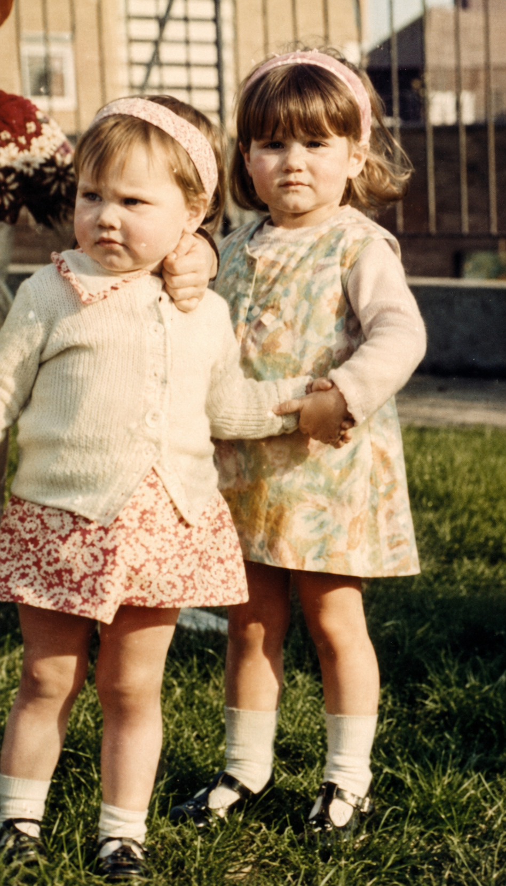

Two scared little girls. One abusive father. One survived against all odds — to tell their story.

Caryn and her sister Jenny, as children
Tell Me You're Sorry, Daddy is the true story of how Caryn brought her father to justice, decades after he sexually abused her throughout her childhood.
With unflinching honesty, she shares how she and her siblings suffered — emotionally, physically, mentally and sexually — at the hands of their parents, and how she finally found the strength to speak.
A Sunday Times and Amazon bestseller, the book was written to give a voice to Caryn's late sister, Jenny, and to everyone who still needs their story to be heard. It is, above all, a book about hope: proof that the shame was never ours to carry.
“Our scars make us who we are. Let's wear them proudly and throw this shame aside — because it was never ours to carry.”Caryn Walker
Caryn Walker's childhood would later become the heart of her writing. Bringing her father to justice as an adult, she chose to tell the truth publicly — not for sympathy, but to free others from silence.
Today she is also a qualified life coach and the founder of a language school, channelling the same belief into everything she does: that telling your story can set you — and someone else — free.
“Telling your story will give somebody else their voice.”
Caryn's courage in speaking out was recognised with the Courage Award at The Echo Awards 2019 — celebrating survivors who turn pain into purpose, and whose honesty helps others find the strength to come forward. As she put it on the night: “I made it. You didn't break me. I'm still here.”
Real reader reviews of Tell Me You're Sorry, Daddy.
Available on Amazon worldwide.
Whether you're a reader, a fellow survivor, or an event organiser — get in touch.